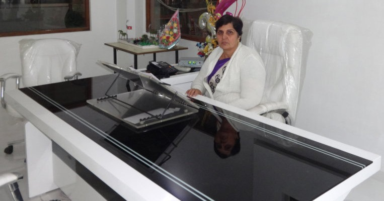

“No system can succeed unless it supported by earned forwards by parents because the home is the child first school, his/her first classroom, his/her first playground and his/her first teacher. It is there for extremely essential for home, the school teachers and the parents to join hands and provide meaning education to the child.
The teaching faculty makes and earnest efforts to motivate individuals and help them acquire both scientific linguistic excellence. The personal and intellectual guidance provided by our experts staff support students to achieve meritorious results in the board examination. I think that
Education is a social process…
Education is growth….
Education is not preparation for life,
Education is life itself.
I feel that our optimistic vision, hope and determination will definitely produce individuals who will have the capacity to embrace a commitment of universal learn. Individuals who will step forward and transcend the barriers that keep us from seeing our self as part of global family. We at National Public School, Narela, hope that we succeed in providing individuals with big dreams, hopes and deep yearning for a utopian world for believe:
The life which one has imagined
One will meet the success
Unexpected in common hours!
“

Mrs. Krishna Khatri
Principal
(Gallantry awarded by C.B.S.E)
Our History
National Public School was established in 2nd April 1992. It is a co-educational unaided English medium school, ideally located on Safiabad Road, Delhi-110040. It is recognized by Directorate of Education, Delhi and is affiliated to the Central Board of Secondary Education (CBSE).
The School got recognition in 1993 by MCD up to Primary level. The school recognized by Directorate of EducationGovt. of NCT of Delhi up to 1st to 8th in 1993-1994. Upgraded up to secondary level in the year 2000. Affiliation by CBSE granted w.e.f. from the session 2001-2002 up to secondary level. Further granted up gradation for the senior secondary level with all the three streams(Science, Commerce, Humanity). From the session 2011-12 CBSE also granted affiliation accordingly.At National Public School, we are passionate about the importance of providing each student with complete sense of belonging, of optimism and success, of being unique and of being heard. Our greatest responsibilities are to assist our students in building personal values, sprit, knowledge and vision.